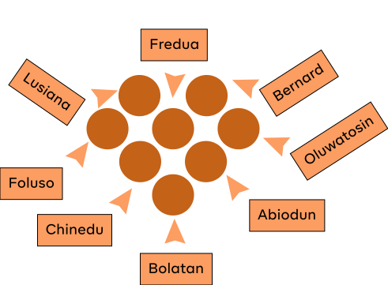

Berry health is a digital health platform providing fast and direct access to medical
doctors and prescription medications, privately delivered to you wherever you are.
Berry
Web App
Mobile View
Project Overview
Berry health is a digital health platform providing fast and direct access to
medical
doctors and prescription medications, privately delivered to you wherever you are.
Berry health is a digital health platform providing fast and direct access to medical
doctors and prescription medications
Why was it neccessary we built berry
Berry health is a digital health platform providing fast and direct access to
medical
doctors and prescription medications, privately delivered to you wherever you are.
The team that built berry

Key Achievements
At Berry I’ve navigated some of the biggest challenges of my career so far. Joining
the
business in september 2015 in its early seed stage, I became the sole product designer
in early 2016. From here I laid the foundations of the Monese product and visual design,
hired, grew and lead the design team to a height of 19 amazing designers across 3 countries.
I implemented a series of design practices including design sprints and ideation
sessions, design critiques, user testing, design system and documentation libraries with
regular system catchups to keep knowledge sharing flowing, and maintain speed and
consistency across the product org as we scaled.
Working closely with agile teams across the product, including User Researchers,
Designers, Engineers, Product Leads and Data Scientists, we collectively pursued the
goal of measuring and improving the customer experience and driving key business
metrics such as growth, revenue and retention.
My Role
Design direction (Ux/UI)
Ux strategy
Information architecture
Interaction design
User testing
Service design
Problem
01
Defining Problem
Chronic and urgent medical conditions are a major issue in the healthcare system,
particularly in Africa, where access to quality healthcare is often limited due to stigma,
shame, and financial constraints.
Many people are hesitant to speak with a medical professional about their health
conditions due to the significant stigma and shame associated with certain illnesses.
Unfortunately, this reluctance to seek medical attention contributes to higher mortality
rates, particularly in regions like Africa.
Understanding the problem
Problem Alignment With Stake Holder
Discussing with the stakeholders was really interesting because we wanted to make
sure we were really aligning ourselves with the problem and what the problem really
was. We were able to properly question the business on why such a product should be
built and also how we envision people to use it. Before we went into investing time,
money and e
Key Findings
Who are our target market ?
During the meeting, we discussed the demographics
and psychographics of our ideal
customer.
After much discussion, we agreed
that our target audience falls
within the age range of 18-65
years old. This age range was
selected based on our research
and understanding of the market,
and we believe it will allow us to
reach a wide range of potential customers.
Gift chuks
01
What are the user goals ?
As we talked about the business
requirements for Berry, we delved
into the user goals for our online
consultation and prescription
healthcare service and recognized
the need to create a secure and
trustworthy platform where
individuals can comfortably seek
medical assistance and receive
appropriate care.
Gift chuks
02
What is the context of product use ?
Overall the context of the product
use was centred around
developing a user-friendly and
accessible healthcare solution
that meets the needs and
expectations of a wide range of
people with specific health issues
ranging from; Sexual health, to
Skin care, Mental health and Hair
loss
Gift chuks
03
Where & when will this product be used
We agreed that the product will
initially be launched in Africa, with
Ghana being the primary target
market. This decision was made
due to the lack of access to proper
healthcare services in many parts
of Africa, as well as the social
stigma surrounding certain health
conditions that may prevent
individuals from seeking medical
attention.
Gift chuks
04
Opportunities
02
Our Goal
Our immediate goal was to build a responsive app that would make it easier for people
to access affordable, and convenient healthcare without facing shame or stigma from
docctors or the society.
We wanted to get something out the door quickly to start learning from and iterating
on, so we opted to narrow our focus on a single feature: the space finding experience.
This could be a tool for members and non-members alike to navigate the Spacious
network and understand its breadth.
Proposed design process
I implemented an effective design process policy to our agile methodology, which
allowed for easier reviewing, Making changes, and facilitating communication within
the team
Research
03
Collaborating with the Ux researcher
During the initial stages of product development, I collaborated with the UX researcher
who led the exploration of our users and their needs. This research process not only
provided me with a deeper understanding of the problem but also helped me
streamline the product’s design and system structure.
Gathering data from users
To ensure that we had reliable data about our users, we made a concerted effort to
collect information beyond just survey responses. We conducted user interviews and
field studies in hospitals to validate what people said they did and ensure that it
aligned with their actual behavior. This thorough approach helped us to better
understand how closely we were aligned with the problem we were trying to solve.
Understanding the system
03
System design structure
As I collaborated with the UX researcher to learn more about our users, I also devoted
time to gaining an understanding of the system from both an experiential and
engineering standpoint. To ensure a well-structured system, I organized various
engineering calls and workshops. During these sessions, we focused on building user
flows, wireframes, studying the latest design trends, and creating reusable components
and sitemaps that proved integral to the final product.
Site Maps
I Created a site map to help us better understand the navigation and flow of our online
consultation and prescription healthcare service.
The site map allowed us to see how different pages and functionalities are connected,
and how users would move from one section of the site to another. It helped us identify
potential navigation issues, user pain points, and areas for improvement. By having a
clear understanding of the site’s structure, we were able to streamline the user
experience, simplify the navigation, and make it easier for users to find what they’re
looking for.
Ux flows
I started creating user flows to help us understand how users would navigate our online
consultation and prescription healthcare service, and to identify areas for
improvement.
By creating user flows, we were able to visualize the entire user journey, from initial
login to completion of a consultation or prescription order. This helped us identify
potential pain points and areas where users might get confused or frustrated. With this
knowledge, we were able to streamline the user experience, making it more intuitive
and user-friendly.
Design thinking
Putting pen to paper and getting my ideas out as quickly as possible with the
information I had gathered was the best way to easily create multiple layouts
and share with the team for reviews and see what needed improvements.
wireframing
Feeling confident in my progress, I rapidly developed low-fidelity wireframes to test
with the team. These wireframes prioritized functionality over aesthetics, enabling us to
quickly iterate and identify any areas for improvement in the user experience.
Design the system
Clinician design
The clinician design was created with the doctors in mind, ensuring that the product
offer flexibility and accessibility to patients’ medical information and history. This
allows doctors to conduct consultations with patients using chat, audio or video
interviews, while also enabling them to prescribe drugs as needed.
Web App
Talk about how to broke the screen into 3 segments and explain the design direction for
that how we tested many ways to potray the system looking at how much data we had
to show to both clinician and patients. So after several iteration we set one strict rule
all page must adhere to the trio view style.
Mobile View
Talk about how i had to study screen sizing and resolution and how i had to read the
core of break points to know at what point do we cut down the view because we went
with responsive instead of adaptive view.
Handoff and Testing
Handing off
Handing off to developers is one of the most overlooked aspect of the design process.
Created interactive prototypes to show the flow end-to-end
Wrote design notes to document the thought process and explain all interactions.
Beta Testing
We conducted a usability test to evaluate the performance of the product and observe
how users interacted with it, while also mapping their responses and reactions.
Performance & revision
We created a whitelist which allowed only invited people to use the platform and from
the whitelist of users we had we noticed some unusual user behaviour that we didn’t
capture and cases we didn’t cover so we had to go back to the drawing boards to hit
some of these critical issues
Results
After visiting the drawing board and reiterating on unusal behaviour we learnt about
our users like, time spent on a page, engagament and bounce rate. we saw a massive
increase in metrics in our next test